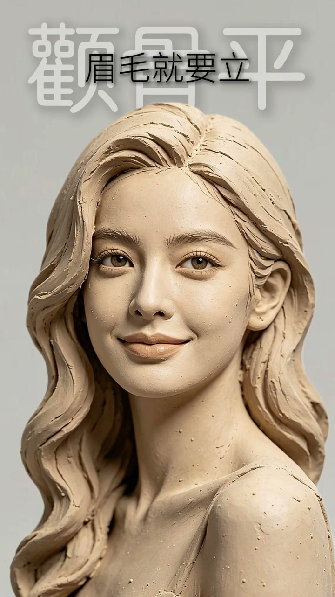
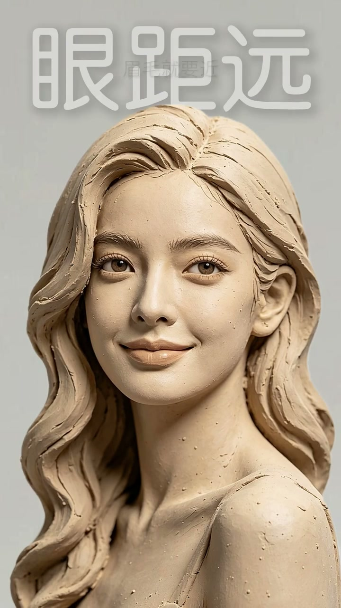

内容要点
这是一个极简风格的眉毛教学视频。视频用 26 秒快速展示了 12 种面部特征与眉毛形状的对应关系，每一条都是「特征 → 眉毛策略」的公式。核心逻辑：眉毛不是孤立存在的，而是根据每个人的面部结构来做调整。
Whisper 识别中存在部分同音字误差（如「美貌→眉毛」「全骨→颧骨」「下河→下颌」「美尾→眉尾」），以下表格已按语义修正。
面部特征 ↔ 眉毛策略对照表
| 面部特征 | 眉毛策略 |
|---|---|
| 中庭长 | 眉毛就要平 |
| 中庭短 | 眉毛就要挑 |
| 颧骨凸 | 眉毛就要柔 |
| 颧骨平 | 眉毛就要立 |
| 太阳穴凹 | 眉尾就要窄 |
| 太阳穴满 | 眉尾就要收 |
| 眼距近 | 眉毛就要远 |
| 眼距远 | 眉毛就要近 |
| 眼睛大 | 眉毛就要粗 |
| 眼睛小 | 眉毛就要细 |
| 下颌宽 | 眉毛就要长 |
| 下颌窄 | 眉毛就要短 |
关键画面
[00:00] 中庭长，眉毛就要平
Long mid-face: keep the brows flat

[00:08] 中庭短，眉毛就要挑
Short mid-face: raise the brows

[00:16] 颧骨凸，眉毛就要柔
Prominent cheekbones: soften the brows
[00:24] 颧骨平，眉毛就要立
Flat cheekbones: sharpen the brows
总结
这 12 条规则涵盖面部纵轴（中庭）、横轴（太阳穴、眼距）、骨骼（颧骨、下颌）和五官大小（眼睛），构成了一套基本的眉形决策框架。每一条都是二选一的对称规则：根据某个面部特征的「长/短」「凸/平」「近/远」「大/小」「宽/窄」来决定眉毛的对应属性。